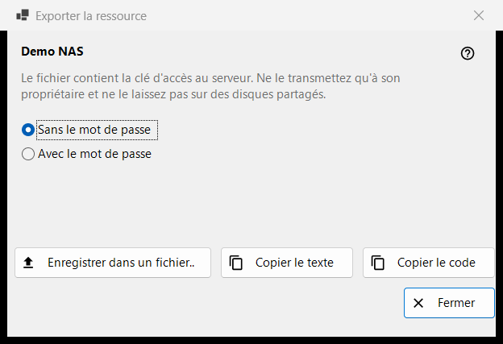
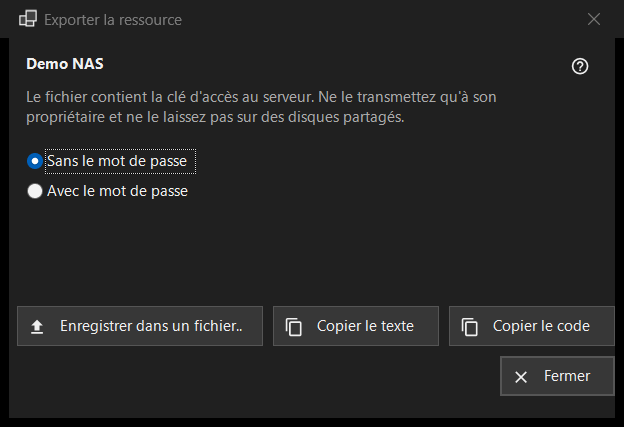

Exporter la ressource
Objectif
Prépare les paramètres d'un serveur SFTP pour qu'un autre ordinateur ou un téléphone puisse les importer. La fenêtre s'ouvre depuis «Exporter..» dans le menu «Plus» de la liste des ressources et demande une ressource sélectionnée ; un dossier partagé par Share Manager s'exporte plutôt depuis Share Manager.


Dans cet ordre
- Lisez l'avertissement sous le nom de la ressource.
- Choisissez «Sans le mot de passe» (par défaut) ou «Avec le mot de passe».
- Appuyez sur «Enregistrer dans un fichier..», ou copiez les paramètres sous forme de texte ou de code court.
- Ne remettez le résultat qu'à son propriétaire.
Les éléments
L'avertissement
La ligne sous le nom indique que le fichier contient la clé d'accès au serveur : ne le remettez qu'à son propriétaire et ne le laissez jamais sur des disques partagés. Cela vaut pour le fichier, le texte copié et le code.
Sans ou avec le mot de passe
«Sans le mot de passe» est sélectionné au départ. «Avec le mot de passe» n'est actif que lorsque le mot de passe enregistré peut être relu ; sinon l'indication «Le mot de passe n'est pas enregistré - le fichier n'en contiendra pas.» s'affiche. Le mot de passe est déchiffré en mémoire pour l'export et ne va nulle part ailleurs.
Enregistrer, copier le texte, copier le code
«Enregistrer dans un fichier..» écrit un fichier .fmscfg via une boîte de dialogue d'enregistrement ; l'écriture refuse les disques FAT ou exFAT, les disques réseau et les dossiers que d'autres utilisateurs peuvent modifier, et ne laisse jamais un fichier à moitié écrit. «Copier le texte» place le document de paramètres dans le presse-papiers et «Copier le code» un code court au contenu identique. Les deux sont copiés avec les marqueurs de confidentialité (pas d'historique du presse-papiers, pas de synchronisation cloud). La ligne d'état montre le résultat.
Ce qui peut être exporté
Seulement un serveur SFTP dont le programme mémorise déjà la clé. La fenêtre s'ouvre dans tous les cas, et un refus apparaît dans la ligne d'état lorsque vous appuyez sur un bouton : un dossier réseau (SMB) ne peut pas être décrit par ce fichier ; la clé du serveur n'est pas mémorisée (ouvrez la ressource une fois et confirmez la clé) ; la ressource n'a pas d'adresse à remettre ; le dossier est écrit d'une façon que le fichier n'accepte pas (corrigez-le avec «Modifier..»).